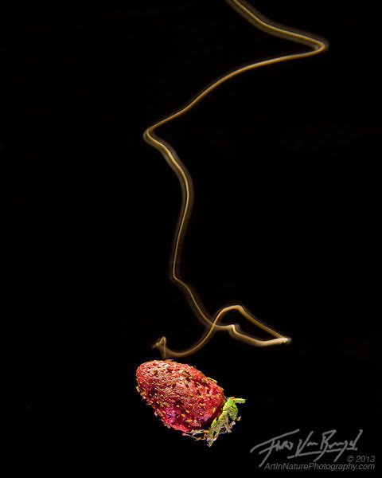

How do flies find your beer?
A multi-sensory story.
Monday, March 30, 2020
12:00-13:00, 3110 Etcheverry Hall
( Department of Mechanical Engineering,
University of Nevada, Reno )
Abstract: Tracking an odor plume to its source is of paramount importance to a fruit fly. There they will find food, mates, and a place to lay their eggs. Natural odor plumes, however, are complex and turbulent structures that are challenging to follow. I will tell two connected stories that help us understand how these tiny insects accomplish this task, providing inspiration for how future fly-sized machines might track chemical plumes to their source. In the first story, I will describe the algorithms that flies use to track odor plumes using multiple sensory modalities, and where in the brain these modalities are integrated. In the second story, I will present a new SLAM (simultaneous localization and mapping) algorithm for direct estimation of absolute velocity from optic flow, inspired by the neural architecture of fly visual processing. Our hypothesis is that flies might use a similar approach, in conjunction with airspeed measurements, to continuously measure wind direction to aid their plume tracking efforts.
|  |
Bio: Floris van Breugel earned his PhD from Caltech in 2014 in Control and Dynamical Systems under the support of NSF and Hertz graduate fellowships while working with Michael H Dickinson on insect flight biomechanics, control, and multi-sensory integration. He subsequently went to the University of Washington to work with Jeff Riffell and J Nathan Kutz as a Postdoc to work on insect search strategies and machine learning approaches to system identification of complex systems, supported by a Sackler Fellowship in Biophysics and a Moore-Sloan-WRF Fellowship in DataScience. Floris joined the Dept. of Mechanical Engineering at UNR in January 2019, and received a Sloan Fellowship in Neuroscience in 2020.